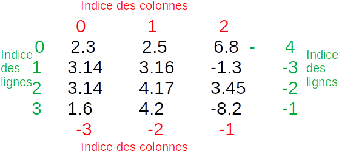
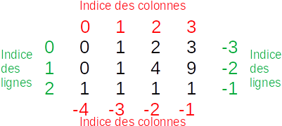

Certains points abordés ici serviront très peu ou seront abordés pendant l’année. Il s’agit d’approfondissement pour ceux qui ont déjà bien compris les parties précédentes.
"""On importe les bibliothèques scientifiques car elles seront utilisées ensuite"""
import numpy as np
import matplotlib.pyplot as plt
Tip
L’ordre des parties va du plus important au moins important.
9. Fenêtre multi-graphique¶
Comme expliqué précédemment, on peut créer une fenêtre graphique avec plusieurs tracés (plusieurs axes). Nous vous expliquons comment faire.
9.1. Création de la grille.¶
import matplotlib.pyplot as plt
f, ax = plt.subplots(nlignes, ncolonnes) # nlignes et ncolonnes sont des entiers
ftoujours la fenêtre graphiqueaxest alors un vecteur (si nlignes OU ncolonnes vaut 1) ou un tableau (sinon) qui contient toutes les zones de tracé.
On accède alors à la zone de tracé voulue grâce à
ax[i]si c’est un vecteur où i est les indices de la ligne ou de la colonne souhaitée.ax[i, j]si c’est un tableau où i et j sont les indices respectifs de la ligne et de la colonne souhaités.
Attention
Comme pour les listes et les vecteurs numpy, les indices commencent à 0. Observez l’exemple ci-dessous pour voir les indices des zones de tracés.
9.2. Création d’un tracé¶
La création d’un tracé (hist, plot, errorbar) se fait de la même manière que précédemment mais un axe est appelé par la syntaxe ax[i, j] ou ax[i]. Ci-dessous deux exemples :
Le premier avec une seule ligne :
axest un vecteur, on utiliseax[i]Le second avec deux lignes et deux colonnes :
axest un tableau, on utiliseax[i, j]
"""Exemple de tracé : sur une seule ligne.
On trace l'évolution temporelle de la tension aux bornes d'un condensateur et de l'intensité qui le traverse dans deux axes différents.
"""
import matplotlib.pyplot as plt
import numpy as np
tau = 1 # Constante de temps
U0 = 5 # Tension initiale
C = 1e-4 # Condensateur
t = np.linspace(0, 5 * tau, 1000) # On trace 1000 points sur 5 tau.
uc = U0 * np.exp(-t / tau) # Tension uC
i = - C / tau * U0 * np.exp(-t / tau) # Intensité
f, ax = plt.subplots(1, 2) # 1 ligne et 2 colonnes : ax est un vecteur
f.suptitle("Circuit RC en régime libre")
""" Tracé du premier graphique"""
ax[0].set_xlabel("t(s)") # Une seule ligne : ax donc un vecteur. Un seul indice suffit
ax[0].set_ylabel("uc(V)") # Une seule ligne : ax donc un vecteur. Un seul indice suffit
ax[0].plot(t, uc, label='uC(t)', color='red')
ax[0].legend()
""" Tracé du second graphique"""
ax[1].set_xlabel("t(s)") # Une seule ligne : ax donc un vecteur. Un seul indice suffit
ax[1].set_ylabel("i(A)") # Une seule ligne : ax donc un vecteur. Un seul indice suffit
ax[1].plot(t, i, label='i(t)', color='blue')
ax[1].legend()
<matplotlib.legend.Legend at 0x7f0971d5b910>
"""Exemple de tracé : un tableau 2*2
On trace l'évolution temporelle de l'angle, de la vitesse angulaire, de l'énergie potentielle et cinétique d'une pendule simple aux petites oscillations
"""
l = 1 # Longueur du pendule (m)
g = 9.81 # Champ de pesanteur (m/s^2)
m = 1 # Masse(kg)
w0 = np.sqrt(g / l) # Pulsation propre (rad/s)
theta0 = 0.5 # Amplitude des oscillations (rad)
N = 1000
t = np.linspace(0, 3 * 2 * np.pi / w0, N)
theta = theta0 * np.cos(w0 * t) # Angle
thetapoint = -w0 * theta0 * np.sin(w0 * t) # Vitesse angulaire
Ep = 1 / 2 * m * g *l * theta ** 2 # Energie potentielle dans l'approximation des petites angles
Ec = 1 / 2 * m * l ** 2 * thetapoint ** 2 # Energie cinétique
"""Création du graphique
"""
f, ax = plt.subplots(2, 2) # ax est un tableau
f.suptitle("Petites oscillations d'un pendule")
"""Tracé de l'angle : en haut à gauche"""
ax[0, 0].set_xlabel("t(s)")
ax[0, 0].set_ylabel("theta(rad)")
ax[0, 0].plot(t, theta, label="Angle", color="blue")
ax[0, 0].legend()
ax[0, 0].grid() # On ajoute une grille
"""Tracé de la vitesse angulaire : en haut à droite"""
ax[0, 1].set_xlabel("t(s)")
ax[0, 1].set_ylabel("theta point(rad/s)")
ax[0, 1].plot(t, thetapoint, label="Vitesse angulaire", color="red")
ax[0, 1].legend()
ax[0, 1].grid() # On ajoute une grille
"""Tracé de l'énergie potentielle : en base à gauche"""
ax[1, 0].set_xlabel("t(s)")
ax[1, 0].set_ylabel("Ep(J)")
ax[1, 0].plot(t, Ep, label="Energie potentielle", color="blue")
ax[1, 0].legend()
ax[1, 0].grid() # On ajoute une grille
"""Tracé de l'énergie cinétique : en bas à droite"""
ax[1, 1].set_xlabel("t(s)")
ax[1, 1].set_ylabel("Ec(J)")
ax[1, 1].plot(t, Ec, label="Energie cinétique", color="red")
ax[1, 1].legend()
ax[1, 1].grid() # On ajoute une grille
plt.show()
9.3. Améliorer l’apparence du graphique¶
On remarque que l’introduction des légendes des axes ou la position de la légende laisse à désirer. Si vous souhaitez obtenir un graphique plus propre voici deux modifications utiles :
transformer la légende en titre de chaque zone (
ax[i, j].set_title("Titre"))Ajouter juste avant d’afficher le graphique
f.tight_layout(): matplotlib va alors calculer tout seul les marges à mettre entre les graphiques en tenant compte des légendes et titres (c’est pourquoi il faut le mettre à la fin puisqu’au début… il n’y a pas de légende !)
Ci-après le code modifié (voir les lignes MODIF et AJOUT).
f, ax = plt.subplots(2, 2) # ax est un tableau
f.suptitle("Petites oscillations d'un pendule")
"""Tracé de l'angle : en haut à gauche"""
ax[0, 0].set_xlabel("t(s)")
ax[0, 0].set_ylabel("theta(rad)")
ax[0, 0].plot(t, theta, label="Angle", color="blue")
ax[0, 0].set_title("Angle") # MODIF : On met un titre au lieu de la légende (label ne sert d'ailleurs plus à rien)
"""Tracé de la vitesse angulaire : en haut à droite"""
ax[0, 1].set_xlabel("t(s)")
ax[0, 1].set_ylabel("theta point(rad/s)")
ax[0, 1].plot(t, thetapoint, label="Vitesse angulaire", color="red")
ax[0, 1].set_title("Vitesse angulaire") # MODIF : On met un titre au lieu de la légende (label ne sert d'ailleurs plus à rien)
"""Tracé de l'énergie potentielle : en bas à gauche"""
ax[1, 0].set_xlabel("t(s)")
ax[1, 0].set_ylabel("Ep(J)")
ax[1, 0].plot(t, Ep, label="Energie potentielle", color="blue")
ax[1, 0].set_title("Energie potentielle") # MODIF : On met un titre au lieu de la légende (label ne sert d'ailleurs plus à rien)
"""Tracé de l'énergie cinétique : en haut à droite"""
ax[1, 1].set_xlabel("t(s)")
ax[1, 1].set_ylabel("Ec(J)")
ax[1, 1].plot(t, Ec, label="Energie cinétique", color="red")
ax[1, 1].set_title("Energie cinétique") # MODIF : On met un titre au lieu de la légende (label ne sert d'ailleurs plus à rien)
f.tight_layout() # AJOUT : Gestion des marges pour afficher les légendes des axes.
plt.show()
Tip
Il existe des options intéressantes dans la fonction subplots. Sans rentrer dans les détails, citons sharex et sharey qui permet aux graphiques de partager la même échelle pour les abscisses ou les ordonnées (soit pour tous les graphiques de la fenêtre, soit par ligne/colonne). sharey a par exemple été utilisé ici pour mettre à la même échelle les calculs des carrés des écarts.
Pour plus d’information, vous pouvez consulter la page sur la fonction subplots
10. Tableaux numpy : manipulations¶
10.1. Opérations usuelles et concaténation¶
Les opérations usuelles et fonctions mathématiques présentées précédemment s’appliquent à nouveau pour les tableaux numpy.
Concaténation : La fonction
appenddoit prendre un troisième argument si on concatène deux tableaux (ou un tableau et un vecteur). L’argumentaxis =:axis = 0: Concaténer verticalement : les deux tableaux doivent donc avec le même nombre de colonnes. Sinon Python renverra une erreur.axis = 1: Concaténer horizontalement : les deux tableaux doivent donc avec le même nombre de lignes. Sinon Python renverra une erreur.Pas de
axis: Python va transformer les tableaux en vecteurs et concaténer les vecteurs.
L1 = np.array([[2.3, 2.5], [3.14, 3.16], [3.14, 4.17]])
L2 = np.array([[1.2, 3.7], [4.2, 3.1]])
L3 = np.append(L1, L2) # On aplatit les tableaux pour obtenir un vecteur.
print(L3)
L4 = np.append(L1, L2, axis=0) # On place L2 sous L1
print(L4)
L5 = np.append(L1, L2, axis=1) # Renvoie un erreur car on ne peut placer L2 à droite de L1 : pas le même nombre de lignes
print(L5)
[2.3 2.5 3.14 3.16 3.14 4.17 1.2 3.7 4.2 3.1 ]
[[2.3 2.5 ]
[3.14 3.16]
[3.14 4.17]
[1.2 3.7 ]
[4.2 3.1 ]]
---------------------------------------------------------------------------
ValueError Traceback (most recent call last)
<ipython-input-6-6a2b3cf6bb19> in <module>
8 print(L4)
9
---> 10 L5 = np.append(L1, L2, axis=1) # Renvoie un erreur car on ne peut placer L2 à droite de L1 : pas le même nombre de lignes
11 print(L5)
<__array_function__ internals> in append(*args, **kwargs)
~/miniconda3/envs/prepa/lib/python3.9/site-packages/numpy/lib/function_base.py in append(arr, values, axis)
4669 values = ravel(values)
4670 axis = arr.ndim-1
-> 4671 return concatenate((arr, values), axis=axis)
4672
4673
<__array_function__ internals> in concatenate(*args, **kwargs)
ValueError: all the input array dimensions for the concatenation axis must match exactly, but along dimension 0, the array at index 0 has size 3 and the array at index 1 has size 2
10.2. Sélection d’une partie d’un tableau.¶
Attention
La méthode présentée ne fonctionne pas avec une liste de listes classique. Uniquement avec des tableaux
numpyAttention, l’indexation commence toujours à 0
10.2.1. Sélection d’un élément.¶
L1 = np.array([[2.3, 2.5], [3.14, 3.16], [3.14, 4.17]])
print(L1[2, 1])
"""
2 : sélection de la troisième ligne
1 : sélection de la deuxième colonne
On affiche donc 4.17
"""
4.17
'\n2 : sélection de la troisième ligne\n1 : sélection de la deuxième colonne\n\nOn affiche donc 4.17\n'
10.2.2. Sélection d’une portion d’un tableau¶
L1 = np.array([[2.3, 2.5, 6.8], [3.14, 3.16, -1.3], [3.14, 4.17, 3.45], [1.6, 4.2, -8.2]])
print("Première sélection", L1[0:2, 1:3]) # Sélection des deux premières lignes (0 et 1) et colonnes d'index (1 et 2). C'est un tableau.
print("Deuxième sélection", L1[:, 1]) # Permet de sélectionner la deuxième colonne en entier (c'est un vecteur)
print("Troisième sélection", L1[1, :]) # Permet de sélectionner la deuxième ligne en entier (c'est un vecteur)
print("Quatrième sélection", L1[1]) # Permet de sélectionner la deuxième ligne en entier aussi (c'est un vecteur)
print("Cinquième sélection", L1[-1, :]) # Permet de sélectionner la dernière ligne en entier (c'est un vecteur)
Première sélection [[ 2.5 6.8 ]
[ 3.16 -1.3 ]]
Deuxième sélection [2.5 3.16 4.17 4.2 ]
Troisième sélection [ 3.14 3.16 -1.3 ]
Quatrième sélection [ 3.14 3.16 -1.3 ]
Cinquième sélection [ 1.6 4.2 -8.2]
Voici le tableau L1 avec les indices des lignes et colonnes pour mieux comprendre.

10.3. Si j’ai bien compris…¶
Exercice
Essayer de prévoir ce qu’affichera chaque print puis observer le résultat en cliquant sur la croix en bas à droite.
L1 = np.arange(0, 4)
L2 = L1 * L1
L3 = np.ones(4)
"""
Ci-dessous : une méthode pour créer un tableau à partir de 3 vecteurs de même taille.
Les L1, L2, L3 sont les lignes du tableau.
"""
M1 = np.array([L1, L2, L3])
print("Cas 1 :", M1)
print("Cas 2 :", M1[2, 3])
print("Cas 3 :", M1[-1, 2])
print("Cas 4 :", M1[1])
print("Cas 5 :", M1[2, :])
print("Cas 6 :", M1[:, -1])
print("Cas 7 :", M1[:, -2])
print("Cas 8 :", M1[1:2, 0:1])
print("Cas 9 :", M1[:-1, 1]) # Un peu plus compliqué...
print("Cas 10 :", M1[-3:-1, -3:3]) # On se concentre bien...
Cas 1 : [[0. 1. 2. 3.]
[0. 1. 4. 9.]
[1. 1. 1. 1.]]
Cas 2 : 1.0
Cas 3 : 1.0
Cas 4 : [0. 1. 4. 9.]
Cas 5 : [1. 1. 1. 1.]
Cas 6 : [3. 9. 1.]
Cas 7 : [2. 4. 1.]
Cas 8 : [[0.]]
Cas 9 : [1. 1.]
Cas 10 : [[1. 2.]
[1. 4.]]
Explication des réponses
Les vecteurs :
L1 crée une liste d’entier partant de 0 jusqu’à 4 exclus soit
[0, 1, 2, 3]L2 est la multiplication terme à terme L1 par lui-même, on passe chaque élément au carré soit
[0, 1, 4, 9]L3 est une liste de 4 éléments composées uniquement de 1.
Le tableau :
M est le tableau composé des trois vecteurs. Il est donc de taille 3*4 (3 lignes, 4 colonnes). Soit :

Les affichage:
Cas 1 : Affichage du tableau complet
Cas 2 : Affichage de l’élément de la troisième ligne (indice 2), quatrième colonne (indice 3), soit
1.0Cas 3 : Afficahge de l’élément de la dernière ligne (indice -1), troisième colonne (indice 2) soit
1.0Cas 4 : Affichage de la deuxième ligne (indice 1) soit
array([0., 1., 4., 9.])Cas 5 : Affichage de la troisième ligne (indice 2) soit
array([1., 1., 1., 1.])Cas 6 : Affichage de la dernière colonne (indice -1) soit
array([3., 9., 1.])Cas 7 : Affichage de l’avant-dernière colonne (indice -2) soit
array([2., 4., 1.])Cas 8 : Affichage du tableau limité à la deuxième ligne (de l’indice 1 à l’indice 2 exclus) et à la première colonne soit
array([[0.]])(de l’indice 0 à l’indice 1 exclus). C’est bien un tableau mais avec une seule valeur !Cas 9 : Affichage de la deuxième colonne mais sans la dernière ligne (on va jusqu’au -1 exclus)
array([1., 1.])Cas 10 : Affichage du tableau limité aux deux premières lignes (de l’indice -3 soit indice 0 - puisqu’il y a 3 lignes - jusqu’à l’indice -1 (dernier) exclus) et à la deuxième et troisième colonne (de l’indice - 3 soit la colonne d’indice 1 - puisque qu’il y a 4 colonnes - jusqu’à l’indice 3 soit la dernière colonne exclus) soit
array([[1., 2.], [1., 4.]])
11. La compréhension des listes¶
11.1. Position du problème¶
On a vu que les listes classiques ne permettaient pas d’appliquer une fonction f à chaque élément en écrivant f(L) (L étant une liste classique). Cela a motivé l’utilisation des listes numpy. Néanmoins :
On est quelques fois obligé d’utiliser les listes classiques
La syntaxe
f(L)ne fonctionne que sifest vectorialisable, c’est-à-dire programmée pour pouvoir s’appliquer à chaque élément.
Fonctions et opérateurs vectorialisables
Non exhaustif :
Les opérateurs classiues
+,-,/,*sont vectorialisablesLes fonctions de la bibliothèques numpy (sin, cos, exp…) sont vectorialisables.
Un exemple fréquent est quand la fonction f fait appelle à un structure conditionnelle qui n’est pas vectorialisable. On reprend la fonction définie par morceau :
def fonction_morceau(x):
if x < 3: # Si x < 3
a = x - 4
elif x < 5: # Si 3 <= x < 5
a = x ** 2
else: # Si x >=5
b = x + 4
a = b ** 3
return a
Impossible de l’appliquer directement à un vecteur numpy (pour la tracer par exemple:
x = np.linspace(0, 15, 1000) # Vecteur de 1000 valeurs entre 0 et 15
y = fonction_morceau(x)
---------------------------------------------------------------------------
ValueError Traceback (most recent call last)
<ipython-input-12-c0a804038c36> in <module>
1 x = np.linspace(0, 15, 1000) # Vecteur de 1000 valeurs entre 0 et 15
----> 2 y = fonction_morceau(x)
<ipython-input-11-45c6fcf56df6> in fonction_morceau(x)
1 def fonction_morceau(x):
----> 2 if x < 3: # Si x < 3
3 a = x - 4
4 elif x < 5: # Si 3 <= x < 5
5 a = x ** 2
ValueError: The truth value of an array with more than one element is ambiguous. Use a.any() or a.all()
The truth value of an array with more than one element is ambiguous. : Le message est clair : il cherche à travailler sur le vecteur et non sur chaque élément.
11.2. Première solution¶
On peut écrire une boucle classique qui parcout tous les éléments de x et leur applique fonction_morceau :
x = np.linspace(0, 15, 1000)
y = np.zeros(len(x)) # On crée un vecteur nul qu'on va remplir
for i in range(len(x)): # i prendra les indices de 0 à len(x) - 1
y[i] = fonction_morceau(x[i]) # On remplit l'élément d'indice i
"""On peut même le tracer"""
f, ax = plt.subplots() # On ne va pas légender le graphique puisqu'il n'y a pas de contexte ici.
ax.plot(x, y)
plt.show()

11.3. Utilisation de la compréhension des listes.¶
Une liste en compréhension est une liste qui est obtenue par action (et/ou filtrage) de chaque élément d’une autre liste. La syntaxe est simple :
L1 = [fonction(x) for x in L] # L est une liste et L1 la nouvelle liste en compréhension
La syntaxe est assez clair : “Applique la fonction à x pour x qui parcourt chaque élément de L”
Attention
Cette méthode renvoie une liste classique, pas un vecteur numpy. Si vous voulez obtenir un vecteur numpy, il faudra utiliser la fonction array :
L1 = np.array([fonction(x) for x in L])
A titre d’exemple :
x = np.linspace(0, 15, 1000)
y = np.array([fonction_morceau(i) for i in x])
"""On peut même le tracer"""
f, ax = plt.subplots() # On ne va pas légender le graphique puisqu'il n'y a pas de contexte ici.
ax.plot(x, y)
plt.show()

12. Fonctions et méthodes¶
Vous avez peut-être remarqué que la façon d’appeler les “fonctions” pouvait un peu différer suivant les cas :
print(f): La fonctionprintagit sur l’argumentfen l’affichant.f.suptitle(): la méthodesuptitleagit sur l’objetfen le modifiant
On ne revient pas sur les fonctions qui ont déjà été présentées précédemment.
Les méthodes sont comme des fonctions mais qui sont étroitement associées à certains types de variables (on parle d’objets). Cette notion est reliée à la Programmation Orientée Objet (POO) rendue possibles par de nombreux langages informatiques (comme Python).
Sans rentrer dans les détails, on peut en POO définir des objets qui vont posséder certaines caractéristiques (des attributs) et certaines fonctions propres (des méthodes) qui permettent de les modifier ou d’obtenir certaines caractéristiques.
Par exemple, si je crée un vecteur numpy v0 : c’est un objet.
Il possède certaines attributs. Ex :
shapedonnera sa taille. Pour obtenir cet attribut, on écrirav0.shape(l’attributshapede l’objetv0)Il possède des méthodes. Ex :
fill(valeur)remplit le vecteur avec la mêmevaleur. Pour appliquer cette méthode àv0, on écrirav0.fill(3).
Il n’est pas nécessaire de maîtriser complètement la POO. Il suffira surtout de repérer quand on utilise la syntaxe d’une fonction (ex : round(3.4)) et quand il s’agit de la syntaxe d’une méthode (ex : ax.set_xlabel('Légende des x')).